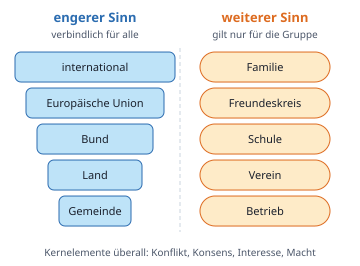

Politisch oder nicht?
Mit einem KI-Tutor lernen
Ein KI-Tutor erklärt dir diese Seite und hilft dir bei den Aufgaben. Wähl deinen Assistenten:
Mit Claude öffnen Mit ChatGPT öffnen Mit Mistral Vibe öffnen
Du nutzt dein eigenes Konto beim Anbieter. Der Assistent ist kein Angebot von lernapps.net: lernapps liefert nur Inhalte und Aufgaben. Die Wahl gilt für alle Seiten, nur auf diesem Gerät.
Kurz ausprobiert
Nach dieser Seite kannst du sagen, ob etwas Politik im engeren oder im weiteren Sinn ist. Erst mal aus dem Bauch:
Aufgabe
Lösung
Ja, aber nur im weiteren Sinn richtige Antwort
Es gibt Interessen, einen Konflikt und eine Entscheidung. Sie gilt aber nur für die Familie.
Ja, Politik im engeren Sinn
Im engeren Sinn wäre es nur, wenn die Regel für die ganze Gesellschaft verbindlich wäre.
Nein, das hat mit Politik nichts zu tun
Hier muss etwas geregelt werden, und es gibt Interessen und Macht. Das sind Kernelemente von Politik.
Die Familie gehört zum nichtstaatlichen Bereich. Dort spricht man von Politik im weiteren Sinn.
Das steckt dahinter
Nicht jeder Streit ist politisch. Politisch wird es erst, wenn etwas geregelt oder entschieden werden muss.

Links die staatlichen Ebenen, rechts Gruppen im nichtstaatlichen Bereich.
Quelle: eigene Zeichnung. Lizenz: CC-BY-4.0.| Sinn | Wo – und für wen verbindlich? |
|---|---|
| engerer Sinn | Gemeinde, Land, Bund, EU, international – für die ganze Gesellschaft |
| weiterer Sinn | Familie, Schule, Verein, Betrieb – nur für die Gruppe |
Merke
- Politisch = es muss etwas geregelt werden.
- Vier Kernelemente: Konflikt, Konsens, Interesse, Macht.
- Engerer oder weiterer Sinn? Frag: Für wen gilt die Entscheidung?
- Politik im engeren Sinn
Regeln und Entscheidungen, die für die ganze Gesellschaft verbindlich sind.
- Politik im weiteren Sinn
Konflikte und Entscheidungen im nichtstaatlichen Bereich, zum Beispiel in Familie, Schule oder Verein.
Jetzt du
Aufgabe
Lösung
Richtige Antwort: Die Aussage stimmt nicht.
Politisch ist eine Situation erst, wenn etwas geregelt oder entschieden werden muss.
Aufgabe
Lösung
Richtige Antwort: Der UN-Sicherheitsrat beschließt Sanktionen gegen einen Staat. – Politik im engeren Sinn; Ein Kurs entscheidet, ob es Referate oder Podcasts für die Note gibt. – Politik im weiteren Sinn; Du kaufst ein Buch über eine Politikerin. – nicht politisch
Der Sicherheitsrat entscheidet verbindlich für Staaten. Der Kurs entscheidet nur für sich. Beim Buchkauf muss nichts geregelt werden – auch wenn das Thema Politik ist.
Aufgabe
Lösung
Konflikt richtige Antwort
Ohne unterschiedliche Positionen gäbe es nichts zu regeln.
Interesse richtige Antwort
Menschen und Gruppen wollen etwas erreichen. Das treibt Politik an.
Macht richtige Antwort
Wer Macht hat, kann Entscheidungen durchsetzen.
Konsens richtige Antwort
Am Ende steht oft eine Einigung, ein Konsens.
Zufall
Zufall gehört nicht zu den Kernelementen. Politik regelt bewusst.
Konflikt, Konsens, Interesse und Macht sind die vier Kernelemente – im engeren wie im weiteren Sinn.
Aufgabe
Lösung
Weil nichts für die ganze Gesellschaft entschieden wird richtige Antwort
Die Familie redet über Politik, entscheidet aber nichts Verbindliches.
Weil Familien nie politisch sind
Familien können Politik im weiteren Sinn machen, etwa bei eigenen Regeln.
Weil es um eine Wahl geht
Wahlen sind sehr wohl Politik im engeren Sinn – aber hier wählt niemand.
Über Politik reden ist noch nicht Politik machen. Im engeren Sinn wird verbindlich entschieden.
Offene Aufgabe
Begründe in 2–3 Stichpunkten: Ist die Wahl einer Klassensprecherin Politik im engeren oder im weiteren Sinn?
Eine gute Antwort enthält:
- Es ist Politik im weiteren Sinn, weil die Schule zum nichtstaatlichen Bereich zählt. Nachlesen
- Kernelemente sind da (Interessen, Konflikt, Entscheidung). Nachlesen
- Die Entscheidung gilt nur für die Klasse, nicht für die ganze Gesellschaft. Nachlesen
- Jeder Stichpunkt hat eine Begründung (weil …). (Form)
Lösung
- Weiterer Sinn, weil die Schule zum nichtstaatlichen Bereich gehört.
- Es gibt Interessen und Konflikte, und es wird entschieden.
- Die Wahl gilt aber nur für die Klasse, nicht für alle.
Als Nächstes: Warum gibt es so viele Definitionen von Politik?
Fehler gefunden oder eine Idee für diese App?